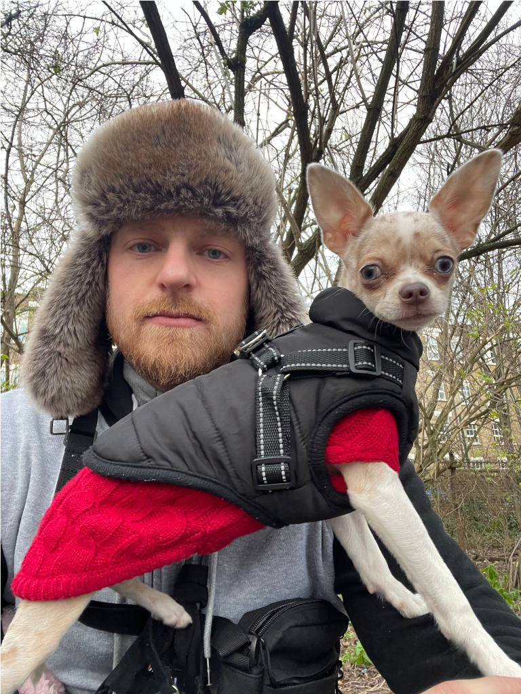
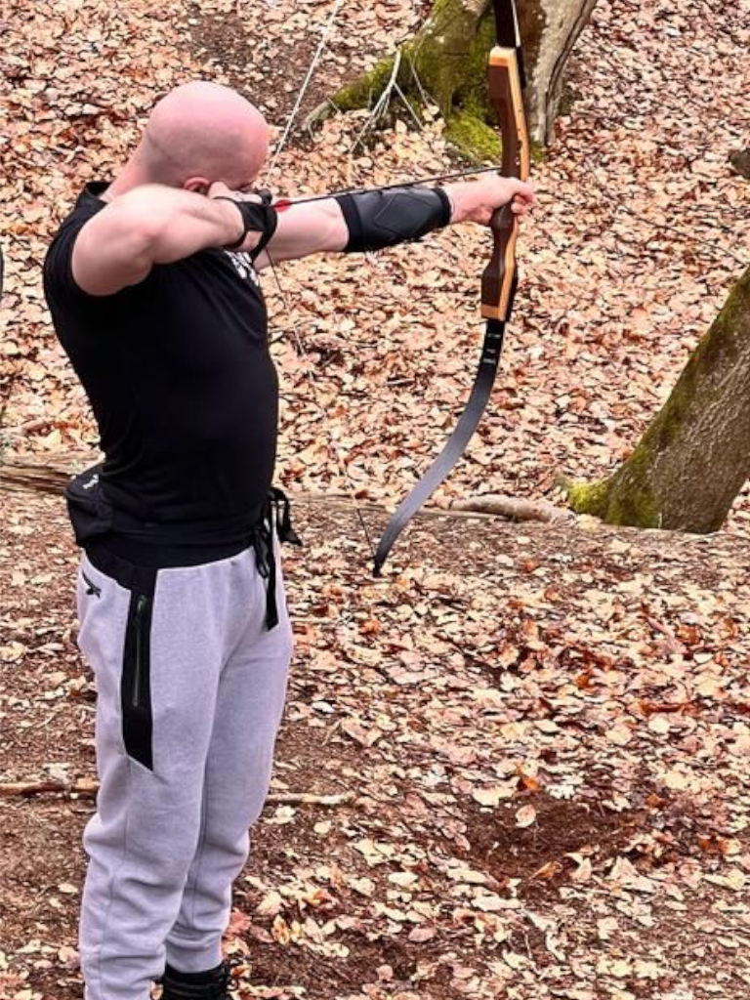

Hi!
I'm Vinny Patrick
About Me

My names Vinny Patrick, the East End's very own fitness and creative extraordinaire! At 32 years
young, I spend my days as a personal trainer, whipping people into shape and helping
them achieve their fitness goals.
But it's not all burpees and protein shakes for me. In my free time, I indulge in a variety
of creative hobbies, including web development, music creation, and 3D animation.
I've been strumming my guitar for 15 years now, so if you need a musical maestro, I'm your guy!
When I'm not working up a sweat or flexing my creative muscles, I loves to travel. I've been to
Iceland twice, once solo and once with my girlfriend & I've even learned the Icelandic language.
In May, my girlfriend and I are heading up to Scotland for a week to explore the beauty of nature
in a campervan. Who knows what kind of fitness and creative inspiration we'll find on the open road?
Oh, and did I mention that I'm also a proud dog dad?
I have a 6-month-old Chihuahua named Lagertha (aka Aggy), whom I love to walk, train, and spoil.
In fact, I often jokes that I spend more time playing with Aggy than I do playing my guitar!
And last but certainly not least, I'm an avid West Ham fan, despite our terrible form.
Hobbies & Interests

- Music Creation, Production & Instrument playing
I have been playing the guitar & making music since 2007 which can be found on my YouTube
- PC Gaming
Destiny 2 is my go to game, however I do often play GTA Online & Rocket League
- Cooking
I got into cooking during covid lock down & have been passionate about it since
- Weight lifting
I have been active in the gym, predominently weight lifting & bodybuilding since 2011
- Walking, training & being with my dog
I have a 5 month old Chihuahua called Lagertha (or Aggy for short) - She was a gift to me from
my partner and has completely changed my life for the better.
- Reading literature on endocrinology
Working as a personal trainer which specialises in aging male population, Im often reading
the latest literature on the andropause and its role in body performance and composition.
- Learning language
I have learned the basics of Spanish & Russian languages but have learned to speak
Icelandic as I visit when I can & plan to live thier in the future.